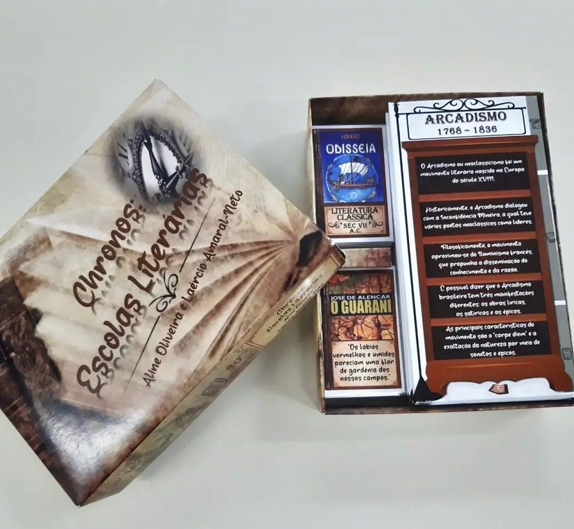

Os Lusíadas
O projeto institucional O círculo mágico na sala de aula, em conjunto com o programa Residência pedagógica, fomentado pela CAPES, elaborou e sistematizou um método de ensino da historiografia literária luso-brasileira por meio do jogo Os lusíadas board game, o qual aproxima o aluno da obra mais celebrada da língua portuguesa, Os lusíadas, de Luís de Camões. O jogo é um board game moderno, ou seja, suas mecânicas diminuem o fator sorte e estimulam a estratégia, corroborando para sua rejogabilidade no intuito de propiciar a apreensão, sob múltiplos aspectos, do contexto histórico e artístico envolvendo a epopeia camoniana. Os coordenadores do projeto, em conjunto com os colaboradores residentes, aplicaram o jogo para um grupo de alunos do ensino médio e os resultados constam entre os objetivos deste trabalho.
Chronos: escolas literárias
Chronos: escolas literárias é um card game que transporta o jogador para o mundo das grandes obras literárias! Nele, o jogador é o bibliotecário da maior biblioteca do Brasil, a Biblioteca Nacional, e precisa organizar as obras em suas devidas prateleiras. Cada obra pertence a uma escola literária e as estantes contém informações úteis para essa organização. Ganha quem conseguir organizar mais rápido e corretamente as obras representadas nas cartas!
